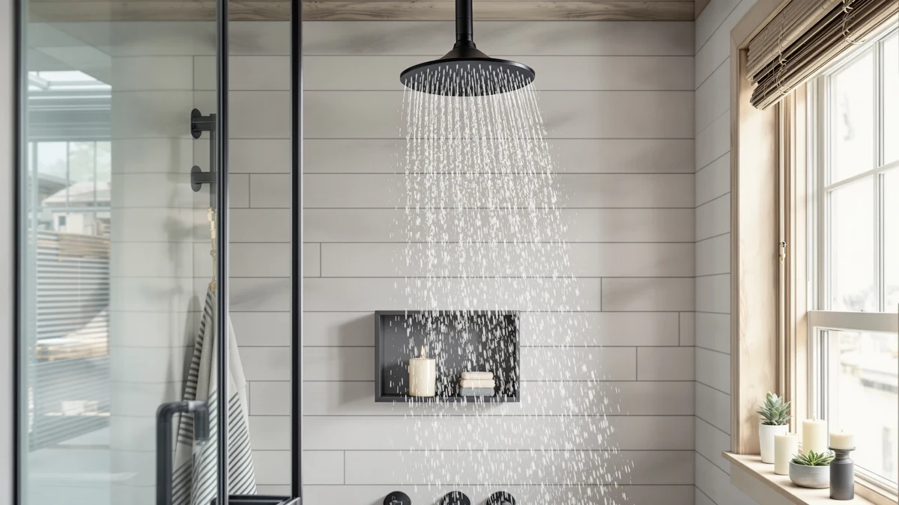

How to Clean Shower Heads without Vinegar: Complete Guide (2026)
Prices and picks verified as of October 2026. Independent, reader-supported reviews.


Things to Know Before You Buy
- Baking soda paired with citric acid powder or lemon juice breaks down mineral scale almost as fast as a vinegar soak, without the smell lingering in your bathroom for hours.
- Most of the work happens during the soak, not the scrubbing. Give the solution 20 to 30 minutes before you touch a toothbrush to the nozzles.
- You can clean a shower head without removing it from the arm, but detaching it lets you submerge the whole spray face and clear every nozzle evenly.
- Hard water areas need this treatment every four to six weeks. Softer water can usually stretch to every two to three months.
- If half the nozzles still look crusted after a full soak and scrub, the mineral buildup has likely hardened inside the housing and a replacement shower head is the faster fix.
If you want to know how to clean shower heads without vinegar, start by soaking the spray face in warm water mixed with baking soda and citric acid or lemon juice, then scrub the nozzles with an old toothbrush. The combination dissolves calcium and magnesium deposits the same way vinegar does, without the sharp smell that lingers in a small bathroom for the rest of the day.
This matters most if you share a bathroom, have sensitive sinuses, or simply keep a bottle of vinegar for the kitchen and nothing else. The process below takes about 35 minutes from start to finish, most of it unattended soak time, and uses ingredients most people already keep in a kitchen cabinet.
What You'll Need
- Supplies: baking soda, citric acid powder or lemon juice, dish soap
- Tools: old toothbrush, adjustable wrench or pliers
Step 1: Remove the shower head
Turn off the water at the shower valve, then wrap a cloth or old towel around the connector nut where the shower head meets the arm. The cloth protects the chrome or matte finish from scratches when you grip it with a wrench or pliers.
Turn the nut counterclockwise until the shower head comes free. Most handheld and fixed models thread off by hand after the first turn loosens the seal. Set the rubber washer aside in a safe spot so you don't lose it before reassembly.
You can skip this step and clean a shower head while it stays attached to the arm, but removing it lets the entire spray face sit fully submerged during the soak in Step 3, which clears buildup from every nozzle instead of only the ones facing down.
Step 2: Mix a baking soda and citric acid solution
Fill a bowl or resealable plastic bag with enough warm water to fully cover the shower head. Stir in a quarter cup of baking soda, then add two tablespoons of citric acid powder or the juice of one lemon. The mixture will fizz briefly as the acid reacts with the baking soda, which is normal and part of what loosens the mineral scale.
This pairing works because baking soda is mildly abrasive and alkaline, while citric acid or lemon juice brings the acidity that dissolves calcium and magnesium deposits, the same deposits vinegar targets. If your water is especially hard, add an extra tablespoon of citric acid to strengthen the mix.
Step 3: Soak the shower head
Submerge the shower head face-down in the solution so the nozzles sit fully covered. If you're using a plastic bag, twist the bag around the arm (or around the shower head itself if you removed it) and secure it with a rubber band so none of the liquid drains out.
Let it soak for 20 to 30 minutes. You'll often see small flecks of white or gray scale drift free into the water as the deposits break down. Heavily clogged shower heads in hard water regions may need a second 20-minute soak with fresh solution.
Resist the urge to use boiling water here. Scalding water can warp plastic nozzle plates on some shower heads, and warm water dissolves mineral scale with equal effectiveness over the full soak time.
Step 4: Scrub the nozzles clear
Pull the shower head out of the solution and run it under warm tap water to rinse off the loosened residue. Dip an old toothbrush in a few drops of dish soap and scrub each nozzle in small circles to clear away any scale the soak didn't fully dissolve.
For nozzles that still feel blocked, slide a toothpick or a straightened paperclip gently into the opening to clear the hole without widening it. Work slowly, since forcing a rigid pin into a soft rubber nozzle can tear the opening and create an uneven spray pattern.
Check each nozzle by eye as you go. A fully cleaned shower head shows uniform, round openings across the entire spray face, not a mix of clear holes and ones still rimmed with white deposit.
Step 5: Rinse, reattach, and test the flow
Rinse the shower head thoroughly under hot running water to flush out any leftover baking soda, citric acid, or loosened scale from inside the housing. Shake off the excess water before reattaching it.
Reposition the rubber washer, thread the shower head back onto the arm by hand, and give the connector a final quarter turn with the cloth-wrapped wrench to seat it snugly. Avoid overtightening, which can crack the washer or strip the threads.
Turn the water back on and run the shower for a minute. Every nozzle should spray in a straight, even line. If a few still sputter or spray sideways, repeat Steps 2 through 4 on those nozzles alone rather than redoing the entire soak.
Common Mistakes to Avoid
The most common mistake when you clean shower heads without vinegar is rushing the soak. Five minutes in a baking soda and citric acid bath looks like it's working, but the mineral scale needs the full 20 to 30 minutes to break down. Pull the shower head out early and you'll end up scrubbing harder for a worse result.
A close second is scrubbing with something too abrasive. Steel wool or a stiff wire brush strips the finish off chrome, brushed gold, and matte black shower heads, and leaves scratches that trap new mineral deposits faster than before. Stick with an old toothbrush and a soft touch.
Skip the baking soda and lemon juice combination if your shower head has a brass, nickel, or oil-rubbed bronze finish and you plan to soak it for longer than 30 minutes. The acid can dull some decorative coatings with extended exposure, so rinse promptly once the soak time is up rather than leaving it to sit overnight.
Don't force a pin or toothpick into a nozzle that won't clear. Wider nozzle holes let more water through than the shower head was designed for, which throws off the spray pattern permanently. If a hole stays blocked after gentle work, leave it and address the rest of the shower head normally.
Finally, don't reattach the shower head without checking the rubber washer. A washer that's cracked or missing after you removed it is the most common cause of a leak at the connector once everything goes back together.
Our Top Picks
If a shower head has been crusted with scale for years, cleaning it brings back some performance but not all of it. Mineral deposits that build up inside the housing, past what a toothbrush can reach, permanently restrict flow on some models. When a thorough soak and scrub still leaves weak or uneven spray, these are the shower heads we'd recommend swapping in based on their build quality and owner feedback.

Editor's Pick
JingGang Brushed Gold Shower System
Owners point to the brushed gold PVD finish as the reason this system resists the pitting that lets mineral scale grip onto cheaper coatings, which means fewer deep cleanings over the life of the product.
$159.99
Check Price on Amazon
Best Value
Delta Modern 14 Series Square
Delta built this model with self-cleaning silicone nozzles that flex during use and shed loose deposits on their own, which verified buyers say cuts down how often a manual soak is needed.
$142.08
Check Price on Amazon
Premium Choice
Rain Shower Head with Handheld
This rain and handheld combo uses rubber-coated nozzles that reviewers describe as easy to wipe free of scale with a finger, which keeps routine maintenance faster than rigid metal nozzle plates.
$52.99
Check Price on AmazonFrequently Asked Questions
What can I use instead of vinegar to clean a shower head?
Baking soda mixed with citric acid powder or lemon juice cuts through mineral buildup almost as well as vinegar, without the smell. A paste of baking soda and water also works for light surface scale.
How long should I soak a shower head to remove limescale?
Twenty to thirty minutes handles most buildup. Heavily clogged shower heads in hard-water areas may need a second soak of the same length.
Does baking soda remove hard water stains from a shower head?
Yes. Baking soda is mildly abrasive and alkaline, which breaks down calcium and magnesium deposits when combined with an acidic ingredient like citric acid or lemon juice and given time to soak.
Can I use lemon juice instead of citric acid powder?
Yes, fresh lemon juice works as a substitute for citric acid powder in this method. It's slightly weaker, so plan on the longer end of the soak time and consider using two lemons for a heavily scaled shower head.
Will this method damage a shower head with a special finish?
Baking soda and citric acid are gentler than most commercial descalers, but brass, nickel, and oil-rubbed bronze finishes can dull with extended acid exposure. Keep the soak at 30 minutes or less and rinse promptly on these finishes.
Verdict
Knowing how to clean shower heads without vinegar comes down to one swap: trade the vinegar soak for a baking soda and citric acid solution, and the rest of the process stays the same. Remove the shower head, mix the solution, soak for 20 to 30 minutes, scrub the nozzles, then rinse and reattach. The whole job takes about 35 minutes and costs less than a cup of coffee in ingredients you likely already own.
Do this every four to six weeks in hard water areas and you'll keep most shower heads spraying evenly for years. If a shower head still sprays weakly or unevenly after a full soak and scrub, the mineral buildup has likely hardened past what any cleaning method can reach, and a replacement like the JingGang Brushed Gold Shower System above is the faster path back to full pressure.